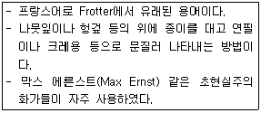
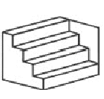
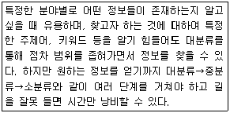
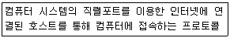
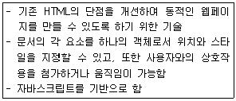
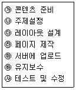
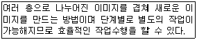

웹디자인기능사 (2015-01-25 기출문제)
1과목: 디자인 일반
1. 웹 디자인에 대한 설명으로 거리가 먼 것은?
- 웹 페이지를 디자인하고 제작하는 것을 의미한다.
- 웹 디자인은 개인용 홈페이지 이외에 기업용 등 다양하다.
- 웹 디자인은 Web과 Design이라는 두 가지 개념이 결합된 것이다.
- 기업, 단체, 행사의 특징과 성격에 맞는 시각적 상징물을 말한다.
(정답률: 92%)

2. 디자인의 심미성에 대한 설명으로 맞는 것은?
- 아름다움을 느끼는 미적 의식이며 주관적일 수 있다.
- 감성적인 부분으로 모든 사람에게 동일하게 나타난다.
- 합리적이며 객관적인 미적 활동이다.
- 국가, 민족, 관습, 시대와 관계없이 동일하게 나타난다.
(정답률: 84%)
3. 동시 대비에 해당하지 않는 것은?
- 색상 대비
- 명도 대비
- 보색 대비
- 한란 대비
(정답률: 64%)
4. 계통 생명이라고도 하며 색상, 명도, 채도를 표시하는 색명은?
- 특정색명
- 관용색명
- 일반색명
- 근대색명
(정답률: 72%)
5. 다음 내용이 설명하는 것은?

- 포토몽타주
- 뜨롬쁘 레이유
- 프로타주
- 콜라주
(정답률: 83%)
6. 색채조화의 공통원리에 대한 설명으로 틀린 것은?
- 질서의 원리는 효과적인 반응을 일으키는 질서 있는 계획에 따라 선택된 색채들에서 생긴다.
- 비모호성의 원리는 두 색 이상의 배색에 있어서 모호함이 없는 명료한 배색에서만 얻어진다.
- 동류의 원리는 가장 가까운 색채끼리의 배색은 보는 사람에게 친근감을 주며 조화를 느끼게 한다.
- 유사의 원리는 색의 3속성의 차이가 큰 색상의 배색이 더욱 조화롭게 나타난다.
(정답률: 75%)
7. 자극이 생긴 후 이제까지 보고 있던 상을 계속해서 볼 수 있는 현상은?
- 조화
- 연상
- 명시성
- 잔상
(정답률: 92%)
8. 어두운 곳에 들어갔을 때 물체의 상이 흐리게 나타나는 현상과 가장 관계가 깊은 것은?
- 색순응
- 푸르킨예 현상
- 박명시
- 조건등색
(정답률: 66%)
9. 유사, 대비, 균일, 강약 등의 디자인 요소가 포함되어 있는 디자인 원리는?
- 균형
- 리듬
- 조화
- 통일
(정답률: 54%)
10. 디자인 형태의 분류 중 이념적 형태에 속하는 것은?
- 인위 형태
- 추상 형태
- 자연 형태
- 실제 형태
(정답률: 74%)
11. 데 스틸(De Stijl)에 관한 설명으로 틀린 것은?
- 네덜란드를 중심으로 한 신조형 운동으로 요소주의라고도 불리운다.
- 도스부르크, 몬드리안, 리트벨트 등이 주요인물이다.
- 아르누보의 조형사상에 큰 영향을 주었다.
- 현대의 조형 활동은 인공세계를 상징하고 표현하는데 중점을 두어야 한다고 생각하였다.
(정답률: 56%)
12. 연속적인 패턴에서 볼 수 있는 디자인 원리는?
- 동세
- 균형
- 반복
- 변화
(정답률: 90%)
13. POP(Point of Purchase) 광고의 특징으로 바르지 않는 것은?
- 충동구매를 유도한다.
- 상품이 있는 장소에서 설득력이 없다.
- 소매점의 장식 효과를 찾는다.
- 구매를 촉진, 결단하게 하는 설득력을 갖는다.
(정답률: 80%)
14. 다음 중 수평선에 대한 설명으로 맞는 것은?
- 평화와 정지를 나타내고 안정감을 준다.
- 동적이고 불안정한 느낌을 준다.
- 이지적 상징을 준다.
- 고결, 희망을 나타내고 상승감, 긴장감을 준다.
(정답률: 87%)
15. 다음 중 4차원 디자인이 아닌 것은?
- TV 디자인
- POP Art
- 애니메이션
- 무대 디자인
(정답률: 59%)
16. 다음 중 기계적 질감에 해당하지 않는 것은?
- 사진의 망점
- 인쇄상의 스크린 톤
- 텔레비전 주사선
- 나뭇결 무늬
(정답률: 91%)
17. 제과점 홈페이지를 제작할 대 식욕을 돋게 하는 색채로 가장 거리가 먼 것은?
- 녹색
- 주황
- 노랑
- 빨강
(정답률: 82%)
18. 그림과 같이 도형의 한쪽이 튀어나와 보여서 입체로 지각되는 착시 현상은?

- 방향의 착시
- 착시의 분할
- 대비의 착시
- 반전 실체의 착시
(정답률: 49%)
19. 색광에서 Red, Blue가 혼합될 때 그 결과 색은?
- Cyan
- Yellow
- Magenta
- White
(정답률: 69%)
20. 다양한 구성 요소끼리 하나의 규칙으로 단일화시키는 원리는?
- 주조
- 연속
- 통일
- 반복
(정답률: 86%)
2과목: 인터넷 일반
21. 다음은 어떤 검색엔진의 사용에 대한 설명인가?

- 키워드 검색엔진
- 주제별 검색엔진
- 혼합 검색엔진
- 메타 검색엔진
(정답률: 81%)
22. 하이퍼텍스트에서 사용되는 <A>태그에서 A가 지칭하는 용어는?
- 앤드(And)
- 오토(Auto)
- 앵커(Anchor)
- 어너니머스(Anonymous)
(정답률: 72%)
23. HTML 문서의 시작과 끝을 표시하기 위해 사용되는 태그로 옳은 것은?
- <T></T>
- <body></body>
- <html></html>
- <link></link>
(정답률: 89%)
24. 상호작용을 지원하는 웹페이지 제작을 위한 CGI의 설명으로 틀린 것은?
- 웹브라우저와 웹 서버, 응용 프로그램 간의 일종의 인터페이스이다.
- 방명록이나 카운터, 게시판 등에 사용된다.
- 웹 서버 프로그램은 CGI 기능을 사용할 수 없다.
- HTML의 ＜FORM＞ 태그를 이용하여 CGI 프로그램으로 데이터를 전달한다.
(정답률: 74%)
25. 웹브라우저(Web Browser)가 아닌 것은?
- 아파치
- 크롬
- 파이어폭스
- 오페라
(정답률: 82%)
26. 다음이 설명하고 있는 통신 프로토콜은?

- TCP/IP
- SLIP/PPP
- ARP/UDP
- POP/SMTP
(정답률: 31%)
27. 인터넷을 이용하여 한 컴퓨터에서 다른 컴퓨터로 파일 전송을 하는 프로토콜은?
- FTP
- Usenet
- Telnet
- ICMP
(정답률: 70%)
28. HTML 문서에 삽입되는 자바 프로그램으로 대화형 페이지를 만드는데 효과적으로 사용될 수 있는 것은?
- 컨트롤
- 컴포넌트
- 클래스
- 애플릿
(정답률: 51%)
29. HTML 문서의 작성자, 날짜, 주요 단어 등 웹브라우저의 내용에는 나타나지 않는 웹 문서의 일반 정보를 나타낼 때 사용하는 태그는?
- <title>
- <meta>
- <head>
- <body>
(정답률: 65%)
30. 일반적인 웹브라우저(Web Browser)의 기능이 아닌 것은?
- 인터넷을 편리하게 사용할 수 있다.
- 원하는 웹사이트에 쉽게 접속할 수 있다.
- 컴퓨터 바이러스를 치료해 준다.
- 자주 이용하는 웹사이트의 목록을 관리할 수 있다.
(정답률: 91%)
31. HTML의 테이블과 관련이 없는 태그는?
- <TR>
- <TH>
- <DT>
- <CAPTION>
(정답률: 58%)
32. 네트워크 구조 중 링(Ring)형의 특징에 대한 설명으로 틀린 것은?
- 노드의 변경 및 추가가 쉽다.
- 2개 이상은 각 노드들이 고리 형태로 연결되어 있다.
- 전송중인 데이터는 목적 컴퓨터에 도달할 때까지 링을 통해 전달된다.
- 잡음(noise)에 강하다.
(정답률: 46%)
33. 구글(Google) 검색엔진에 대한 설명으로 틀린 것은?
- 로봇(Robot) 프로그램을 이용하는 단어별 다국어 검색 엔진이다.
- 검색 결과와 유사한 문서들을 [비슷한 페이지] 링크로 보여준다.
- PDF 형태의 정보 검색이 가능하다.
- 모든 검색어에 대해 기본 값으로 OR 연산을 실행한다.
(정답률: 54%)
34. 다음이 설명하고 있는 것은?

- Shell
- Ruby
- DHTML
- XML
(정답률: 66%)
35. HTML(Hyper Text Markup Language)의 특징으로 거리가 먼 것은?
- HTML은 Markup 언어이다.
- HTML 문서는 ASCII 코드로 구성된 일반적인 텍스트 파일이다.
- HTML 문서에는 동영상을 재생할 수 없다.
- HTML은 컴퓨터 시스템이나 운영체제에 독립적이다.
(정답률: 71%)
36. 자바스크립트에서 사용되는 연산자가 아닌 것은?
- |, ||
- &, &&
- >>, >>>
- <<, <<<
(정답률: 48%)
37. 미국의 대학과 연구기관, 일부 민간회사의 컴퓨터 센터를 연결하는 광역 학술 연구망은?
- NSFNET
- ARPANET
- BITNET
- CSNET
(정답률: 30%)
38. 두 개의 컴퓨터 사이에 정보교환을 위해 사용되는 규칙을 의미하는 것은?
- 스트림
- 패킷
- 프로토콜
- 인터페이스
(정답률: 69%)
39. 인터넷상의 서버에 자신의 계정이 있어 서버 접속을 위해 사용자명과 패스워드를 입력하는 행위를 지칭하는 용어는?
- 로그아웃(logout)
- 로그인(login)
- 링크(Link)
- 서핑(surfing)
(정답률: 92%)
40. 자바스크립트에서 일정 시간마다 지정된 처리를 반복 호출하는 함수는?
- escape()
- clearTimeout()
- setInterval()
- setTimeout()
(정답률: 64%)
3과목: 웹그래픽스 디자인
41. 다음 웹디자인 프로세스를 순서대로 바르게 나열한 것은?(일부 컴퓨터에서 보기의 특수문자가 정상적으로 보이지 않아고 괄호뒤에 다시 표기하여 둡니다.)

- ㉮→㉯→㉰→㉱→㉲→㉳→㉴(가→나→다→라→마→바→사)
- ㉯→㉮→㉰→㉱→㉴→㉲→㉳(나→가→다→라→사→마→바)
- ㉮→㉰→㉳→㉴→㉯→㉱→㉲(가→다→바→사→나→라→마)
- ㉯→㉮→㉰→㉱→㉲→㉴→㉳(나→가→다→라→마→사→바)
(정답률: 65%)
42. 웹사이트 구축 시 고려사항으로 가장 거리가 먼 것은?
- 명확하고 일관된 내비게이션을 유지한다.
- 가급적이면 플러그인이 필요 없는 페이지를 만든다.
- 메뉴별로 사용한 모든 이미지는 유지보수를 위해 같은 폴더에 관리한다.
- 안정된 기술을 사용한다.
(정답률: 56%)
43. 웹 문서에 텍스트나 이미지 또는 멀티미디어 요소를 클릭하면 외부의 텍스트나 이미지, 기타 다른 멀티미디어 요소로 변경되는 것은?
- 테이블
- 하이퍼링크
- 프레임
- 태그
(정답률: 86%)
44. 컴퓨터 그래픽의 이미지 표현 방식 중 벡터에 대한 설명으로 거리가 먼 것은?
- 이미지가 복잡하지 않은 글자나 로고, 캐릭터 등에 적합하다.
- 이미지를 축소, 확대하여도 이미지 질에 손상이 없다.
- 도형으로 이루어져서 선과 면이 뭉개지지 않아 깔끔하게 표현된다.
- 픽셀이 모여서 점과 점 사이를 연결하여 이미지가 구성되는 방식이다.
(정답률: 72%)
45. 웹상에 사용되는 파일 포맷 중 GIF와 JPG의 장점을 합친 형태로 GIF와는 달리 투명도 자체를 조절할 수 있는 특징을 가진 것은?
- AI
- PNG
- PSD
(정답률: 82%)
46. 동적인 타이포그래피를 나타내는 것으로 틀린 것은?
- 키네틱 타이포그래피
- 스테이틱 타이포그래피
- 무빙 타이포그래피
- 모션 타이포그래피
(정답률: 66%)
47. 2D 애니메이션의 종류가 아닌 것은?
- 셀 애니메이션
- 모래 애니메이션
- 페이퍼 애니메이션
- 클레이 애니메이션
(정답률: 69%)
48. 3차원 그래픽스에서 렌더링 과정과 거리가 먼 것은?
- 은면 제거
- 그림자 표현
- 원근 투명
- 텍스쳐 매핑
(정답률: 36%)
49. 자바스크립트에 사용되는 연산자의 설명으로 틀린 것은?
- "서로 같지 않다"의 관계연산자는 "!="이다.
- "서로 같다"의 관계연산자는 "="이다.
- “++”는 증가 연산자이다.
- “^”는 논리 연산자이다.
(정답률: 51%)
50. 동영상 파일 포맷으로 틀린 것은?
- *.mp3
- *.asf
- *.avi
- *.rm
(정답률: 64%)
51. 안티앨리어싱(Anti-aliasing)에 대한 설명으로 맞는 것은?
- 외곽선의 계단현상을 선명하게 한다.
- 외곽선의 계단현상을 부드럽게 한다.
- 외곽선의 계단현상을 만든다.
- 외곽선의 계단현상을 사각 형태로 만든다.
(정답률: 88%)
52. 인터넷에서 사용 가능한 사운드 파일 포맷이 아닌 것은?
- aiff
- wav
- au
(정답률: 77%)
53. 애니메이션 제작과정 중 최초 단계로 중요 장면들을 열거해 놓은 그림을 무엇이라 하는가?
- Recoding
- Planning
- Story Board
- Effect Sound
(정답률: 82%)
54. 캠코더에서 얻은 동영상클립을 편집하여 결과물을 얻기에 적합한 소프트웨어가 아닌 것은?
- Premiere
- Movie Maker
- Vegas
- Media Player
(정답률: 70%)
55. 사용할 수 있는 색상의 수가 제한될 경우에 주로 활용하며, 적은 수의 색상으로 눈의 착시현상을 이용하여 여러 색을 사용한 것처럼 효과를 얻을 수 있는 방법은?
- Modeling
- Rotating
- Dithering
- Resolution
(정답률: 71%)
56. 컴퓨터 그래픽스(Computer Graphics)에 대한 정의로 틀린 것은?
- 컴퓨터의 하드웨어와 소프트웨어를 이용하여 도형, 그림, 사진 이미지 등의 시각적 이미지를 만들어 내고 디지털화(Digitalize) 시키는 것이다.
- 컴퓨터 그래픽스는 크게 2D 그래픽스와 3D 그래픽스로 나눌 수 있다.
- 활용 범위가 매우 넓으며, 특히 영화나 영상물 등 의 멀티미디어 분야에서 가장 효과적으로 활용되고 있다.
- 전통적인 회화 방식을 응용하여 결과물을 디지털화 시킨 것은 제외한다.
(정답률: 83%)
57. 다음이 설명하고 있는 웹 그래픽 제작 소프트웨어의 기능으로 옳은 것은?

- 레이어
- 레벨
- 오브젝트
- 심볼
(정답률: 85%)
58. 컴퓨터 그래픽스 활용 분야로 가장 거리가 먼 것은?
- VR(Virtual Reality)
- Animation
- CAM
- Simulation
(정답률: 75%)
59. 1946년 미국의 “에커드”와 “모클리”에 의해 개발된 세계 최초의 컴퓨터는?
- 애플
- 맥킨토시
- 에니악
- IBM
(정답률: 79%)
60. 웹 사이트 기획 시 좋은 정보구조 설계를 위해 고려해야할 사항으로 틀린 것은?
- 정보의 양
- 정보의 상하관계
- 정보의 일관성
- 정보의 모호성
(정답률: 67%)